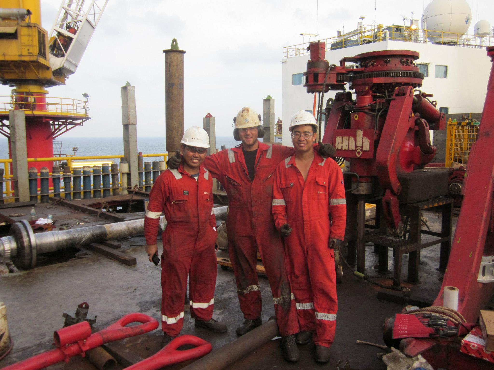
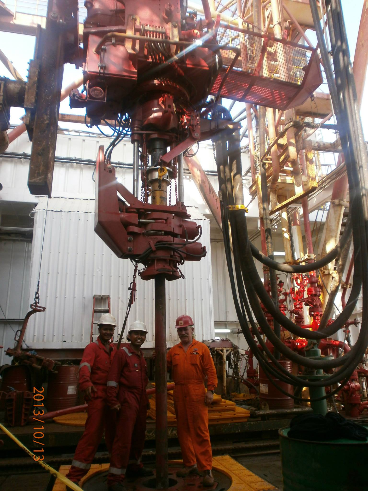
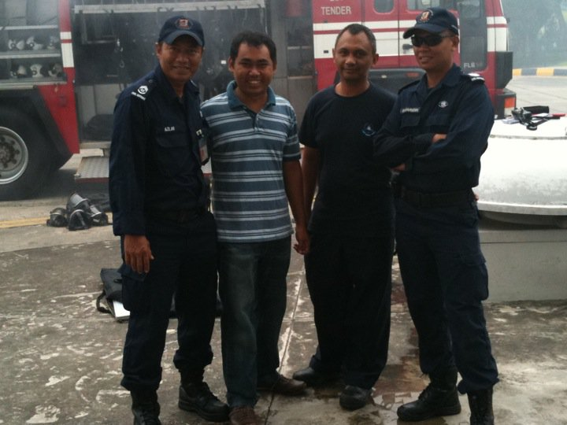
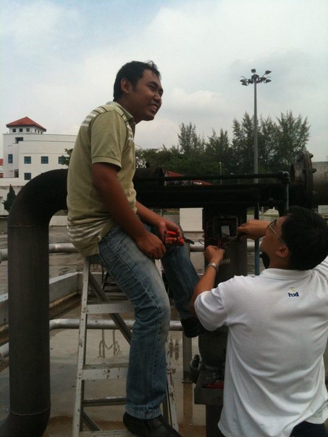
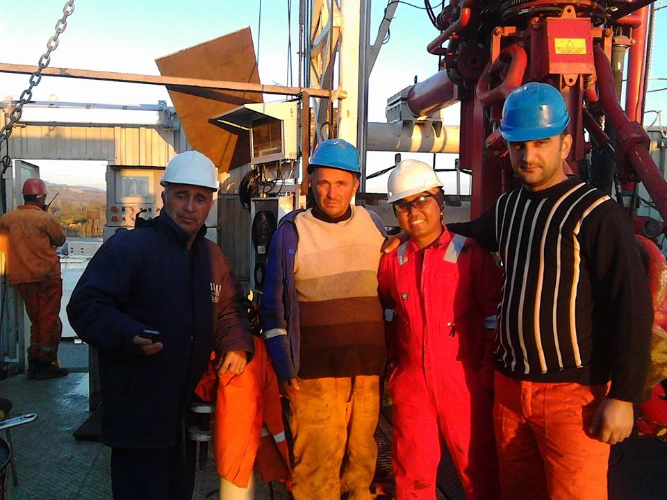

System-Level Controls Engineer — Multi-Domain Industrial Systems
Focused on solving real system failures across control, mechanical, and process domains
Offshore operations · Hydraulic top drive systems · Multi-domain integration

Real systems require coordination across multiple engineering domains simultaneously.
"Failures are rarely isolated to one domain. Identifying which system layer is actually responsible — before making any changes — is the first step."

Burner management · SCADA integration · Safety-critical commissioning


Structured isolation · Data-driven thinking · System-level reasoning
Compressor needed time to rebuild pressure after each attempt. Eventually pressure was sufficient — so the system would "self-recover," masking the root cause.
No pressure transmitter was installed. The control system had no way to see the pressure drop. All signals looked correct.
Control, mechanical, and electrical layers all verified correct. The uninstrumented air supply became the sole remaining domain.
"Many failures originate from the physical process, not the control system. Without proper instrumentation, these issues are invisible until they become critical."
"Root cause: insufficient air pressure due to a clogged filter — resolved by adding pressure monitoring and preventive maintenance controls."

Test loop systems · Amazon IPC · Industrial monitoring
How this background maps to complex multi-physics systems
"Where gas flow, thermal conditions, and control logic interact — identifying the correct domain is the first and most critical step."
Real systems · Real failures · Real consequences.